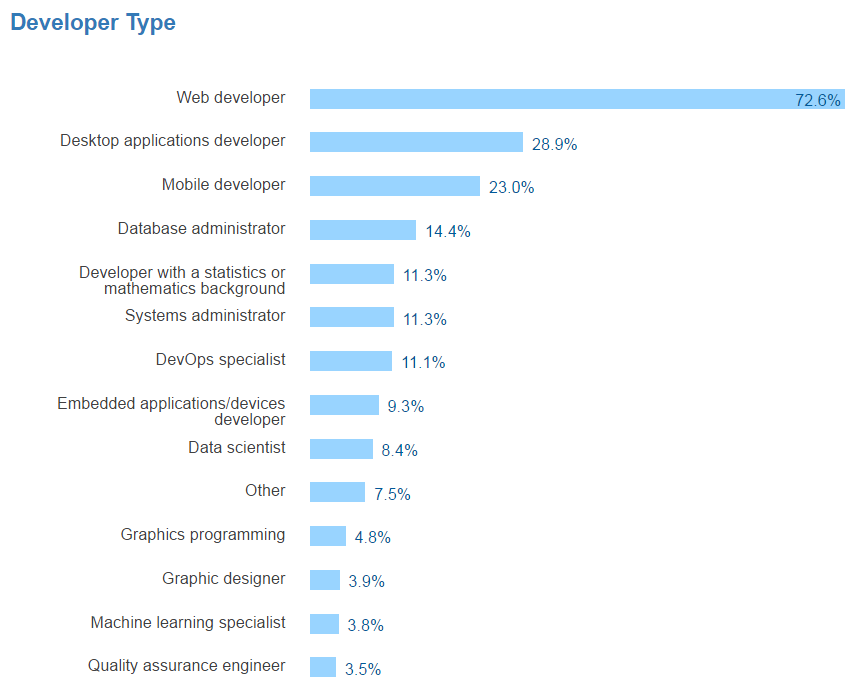

Кто такой фронтенд-разработчик
Согласно ежегодному исследованию StackOverflow, самая популярная профессия среди пользователей сервиса в 2017 году — это Web developer. Именно в эту категорию входят все фронтенд-разработчики.
Данные StackOverflow
Если зайти на первый попавшийся сайт по поиску работы, например, на hh.ru, создастся впечатление, что фронтенд-разработчик — это специалист-хамелеон.
Начинается все с путаницы в названиях вакансий: можно встретить и «front-end developer», и «front end разработчик», и «фронтендщик», и «фронтенд девелопер», и «web developer», и «фронтенд-разработчик». Иногда даже можно увидеть какого-нибудь «веб-верстальщика» с требованиями под фулстак-разработчика. Реакция на это одна: WTF?!
Беда в том, что часть работодателей не отличают (или не хотят отличать) верстальщика от фронтенд-разработчика, — это понятно по описанию вакансий. Разберемся, какие умения отделяют фронтенд-разработчика от «верстака» (верстальщики, не обижайтесь, вы тоже хорошие)
Верстальщик — боец узкого фронта. Его задача — сверстать полученный от дизайнера макет, используя HTML+CSS. Он, возможно, немного умеет в JavaScript, но чаще ограничивается умением прикрутить какой-нибудь плагин jQuery.
Фронтенд-разработчик не просто верстает макеты. Он хорошо знает JavaScript, разбирается во фреймворках и библиотеках (и активно юзает часть из них), понимает, что находится «под капотом» на серверной стороне. Его не пугают препроцессоры и сборщики LESS, SASS, GRUNT, GULP, он умеет работать с DOM, API, SVG-объектами, AJAX и CORS, может составлять SQL-запросы и копаться в данных. Получается сборная солянка навыков, к которым добавляется понимание принципов UI/UX-проектирования, адаптивной и отзывчивой верстки, кросс-браузерности и кросс-платформенности, а иногда и навыков мобильной разработки.
Фронтендщик в обязательном порядке умеет работать с контролем версий (Git, GitHub, CVS и т. д.), использовать графические редакторы, «играть» с шаблонами различных CMS.
Еще крайне желательно знать английский язык, чтобы не переводить спецификацию в Гугл-переводчике, уметь работать в команде, иногда мультиязычной, разбираться в веб-шрифтах, ну и понимать тестировщиков и сам процесс тестирования.
Итак, какие технологии должен освоить фронтенд-разработчик:
- HTML и CSS (в том числе сетки и CSS-фреймворки, спецификации W3C и WHATWG, HTML5/CSS3 Polyfills)
- Препроцессоры CSS (Sass, Less, Stylus и т. д.)
- JavaScript
- Популярные фреймворки и библиотеки: jQuery, Angular.JS, React.JS, Backbone.js и т. д.)
- OOCSS / BEM / SMACSS
- SVG
- DOM
- HTML5 API
- CMAScript 6
- Популярные CMS (WordPress, Drupal, Joomla и т.д.)
- Понимать принципы построения бекэнда и разбираться в серверных технологиях (Node.js, PHP, Ruby, .NET и т. д.)
- Инструменты дебаггинга (Chrome Dev Tools, Firebug и прочие)
- JavaScript транспайлеры (Babel)
- Инструменты контроля версий (Git, GitHub, CVS и т. д.)
- Базы данных и языки запросов (SQL, MySql, NoSQL, MongoDB и т. д.)
- Графические редакторы (Photoshop, Illustrator и т. д.)
В чем должен разбираться:
- кросс-браузерная и кросс-платформенная разработка;
- прогрессивное улучшение и изящная деградация;
- мобильная разработка;
- адаптивная и отзывчивая верстка;
- веб-шрифты;
- принципы SEO-оптимизации.
Как стать фронтенд-разработчиком
Для начала снять розовые очки. Обучение — это труд и самодисциплина. Большинство начинающих айтишников отсеиваются на этапе «хочу стать программистом и получать зарплату в долларах, но не думал, что придется так много учиться». Уникальность программирования и вообще любой айтишной специальности в постоянном самообучении. В этом и сложность, и прелесть IT-сферы. Если вас это не пугает — круто! У вас есть все шансы стать отличным специалистом.
Главное правило будущего специалиста — ставить реальные цели в процессе обучения. В этом поможет планирование. Составьте список инструментов, которые планируете изучить, и держите его перед глазами.
Тем, кто стартует с нуля, надо начинать с HTML и CSS и освоить их на уровне идеальной верстки PSD-макетов. На этом этапе также надо научиться работать с текстовыми и графическими редакторами и знать основные принципы дизайна (как плюс). Затем взяться за JavaScript: синтаксис, архитектура и возможности языка. Освоить популярные фреймворки и библиотеки, параллельно полюбить системы контроля версий и какой-нибудь из популярных таскраннеров. Добавить препроцессоры и фреймворки CSS, разобраться в серверных технологиях. А дальше можно пить смузи на Бали шлифовать полученные знания до бесконечности.
Примерный путь начинающего фронтенд-разработчика.
У вас он будет свой.